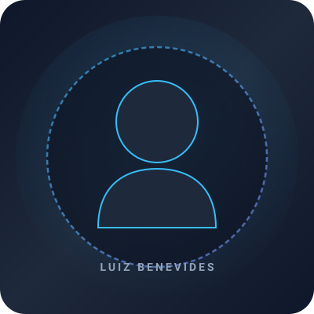
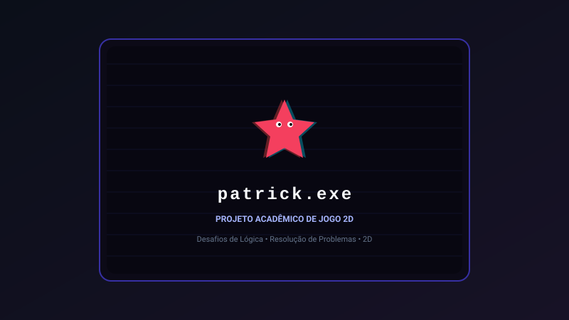

Engenharia & Back-End
Foco na lógica de negócios, integridade de dados e arquitetura limpa de software.
Desenvolvedor de Software | Estudante de Sistemas de Informação
Estudante de Sistemas de Informação na UFMS com formação técnica em Informática pelo IFMS. Foco em desenvolvimento back-end, engenharia de software e resolução de problemas estruturados.

Sou estudante de Sistemas de Informação na Universidade Federal de Mato Grosso do Sul (UFMS), com formação técnica em Informática pelo Instituto Federal de Mato Grosso do Sul (IFMS).
Tenho grande interesse em desenvolvimento de software, com ênfase na construção de aplicações, programação back-end e resolução de problemas técnicos e de arquitetura. Possuo experiência prática com Java através do desenvolvimento de sistema para a Clínica de Psicologia da UFMS.
Também desenvolvo projetos pessoais e acadêmicos utilizando C#, Unity e outras tecnologias para jogos e aplicações interativas. Tenho perfil dedicado a pesquisar soluções eficientes, aprender novas ferramentas e aprimorar continuamente a qualidade do código produzido.
Foco na lógica de negócios, integridade de dados e arquitetura limpa de software.
Atuação em sistema desktop Java com refatoração, validações e controle de acesso.
Interesse e exploração contínua em mecânicas de gameplay, Unity, C# e Inteligência Artificial.
Apresentação honesta das tecnologias com as quais possuo estudo e experiência prática, sem métricas arbitrárias.
• Tecnologias com experiência prática documentada ou projetos desenvolvidos.
Atuação profissional em desenvolvimento e suporte com responsabilidades documentadas.
Clínica de Psicologia da UFMS
Atuação no desenvolvimento e manutenção contínua de uma aplicação desktop em Java, com relatório formal de atividades comprobatório.
Embrapa — Núcleo de Tecnologia da Informação (NTI)
Atuação em suporte técnico e helpdesk, prestando apoio direto à equipe de TI. Realização de atividades relacionadas à manutenção de equipamentos de informática e infraestrutura de suporte elétrico (no-breaks / UPS).
Projetos práticos, acadêmicos e pessoais desenvolvidos com diferentes tecnologias.

Aplicação desktop desenvolvida em Java para gerenciamento de informações clínicas. Inclui controle de registros, validações, autenticação, níveis de acesso e manutenção com exclusão lógica.

Projeto de desenvolvimento de jogo em Unity e C#, envolvendo programação orientada a objetos, mecânicas de gameplay, combate e conceitos fundamentais de Game Design.

Projeto de desenvolvimento de jogo 3D em Unity e C#, focado em navegação espacial, iluminação, atmosfera e interação tridimensional.

Projeto acadêmico de jogo 2D com desafios de lógica, resolução de problemas estruturados, controle de estados e física básica bidimensional.

Projeto de jogo inspirado no gênero clássico arcade, desenvolvido em GameMaker, trabalhando física de colisões, controle de pontuação e progressão de fases.
Bases sólidas em computação, algoritmos, desenvolvimento e sistemas.
Universidade Federal de Mato Grosso do Sul (UFMS)
Previsão de conclusão: 2027
Formação superior abrangendo engenharia de software, modelagem de bancos de dados relacionais, estrutura de dados, redes e arquitetura de sistemas.
Instituto Federal de Mato Grosso do Sul (IFMS)
2021 – 2023
Formação técnica profissionalizante sólida com foco em lógica de programação, fundamentos de hardware, desenvolvimento web e suporte computacional.
Estou aberto a oportunidades de estágio e posições de entrada em desenvolvimento de software (remoto ou presencial).
luiz.benevides.dev@gmail.com
Corumbá, Mato Grosso do Sul — Brasil
Telefone e e-mail direto serão atualizados conforme abertura de processos seletivos.